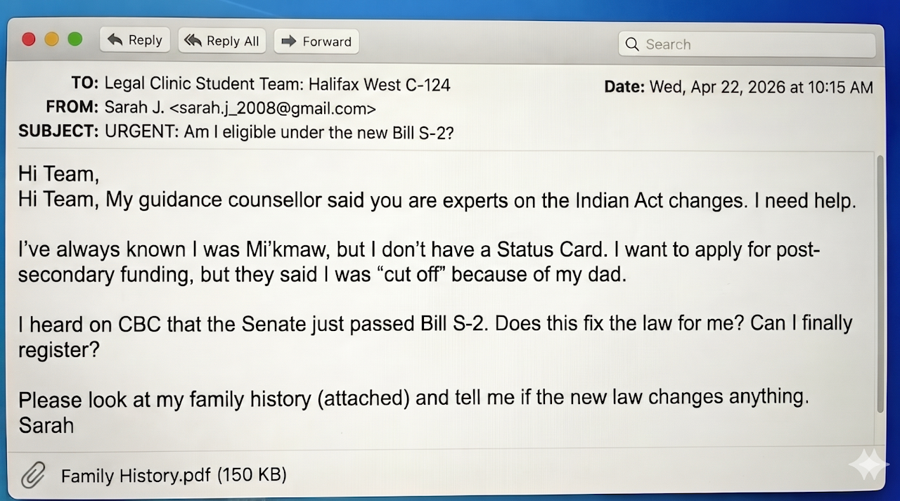

Sarah and the Indian Act
An investigation into identity, law, and history

Sarah believes the new Bill S-2 might finally grant her Indian Status. To give her an accurate answer, you must investigate the history of the laws that excluded her family.
Resource: Download Sarah's Family History (PDF)
Use the tabs above to navigate through the legal database and gather your evidence.
Imagine there was a single book of rules that decided who you were, where you could live, and what rights you had. For over a century, that's exactly what The Indian Act has been for First Nations people in Canada.
This isn't just dusty history. It's a living, breathing debate about identity and justice. The files in this database tell the story of a law that has controlled lives for generations.
Please open your assigned work document in Google Classroom to record your findings as you investigate Sarah's case.
The Law Before 1985
Gender Discrimination and the "Marrying-Out" Rule
Before 1985, the rules were incredibly strict and often unfair. The Indian Act operated almost exclusively through the male line. Whether you were legally recognized as an "Indian" depended entirely on the Status of your husband or father.
The Punishment: "Marry-Out"
If an Indigenous woman married a man who did not have Status (a non-Status man), she automatically lost her own Indian Status. Her children also lost their Status. She was effectively exiled from her community.
The Privilege: "Marry-In"
If an Indigenous man married a non-Indigenous woman (e.g., a white woman), that woman automatically gained Indian Status. Their children were guaranteed Status.
When the Canadian Charter of Rights and Freedoms was introduced in 1982, it guaranteed equality rights. The government realized the "marry-out" rule was now unconstitutional and had to change.
The Fight for Status
Domestic Activism, International Pressure, and the 1985 "Compromise"
For over a century, the Indian Act enforced a patrilineal system that discriminated against Indigenous women. By the mid-1980s, a convergence of grassroots activism, international humiliation at the United Nations, and new constitutional laws forced the Canadian government to act.
Domestic Pressure: Indian Rights for Indian Women
In 1967, Indigenous women mobilized to form Indian Rights for Indian Women (IRIW). Led by figures like Mary Two-Axe Earley, Nellie Carlson, and Kathleen Steinhauer, the group fought against significant opposition from both the federal government and male-dominated Band Councils.
They faced intense challenges, including lack of funding and community ostracization, yet they succeeded in bringing the issue of gender discrimination to the national stage.
International Pressure: The Lovelace Case
When Canadian courts failed to protect Indigenous women, activists took their fight to the international stage.
Sandra Lovelace v. Canada (1981)
Sandra Lovelace Nicholas, a Maliseet woman from the Tobique First Nation, lost her status after marrying a non-Indigenous man. When the marriage ended, she and her children were denied housing and education on her reserve.
She brought her case to the United Nations Human Rights Committee. In 1981, the UN ruled that Canada was in violation of Article 27 of the International Covenant on Civil and Political Rights by denying her the right to enjoy her culture.
This ruling was a major embarrassment for Canada on the world stage, labeling the country as a violator of human rights.
The "Compromise": Bill C-31 (1985)
Passed in June 1985, Bill C-31 was the government's response. It was framed as a "compromise" between three competing interests: Women's Rights, First Nations Self-Determination, and Government Fiscal Restraint.
The Changes
- Reinstatement: Women who had lost status for "marrying out" were reinstated.
- Abolition: The "marrying out" rule was abolished.
- Band Control: Bands were given control over their own membership lists.
The Flaws
To limit the number of new Status Indians (and federal costs), the government created the "Second Generation Cut-Off."
- Created a hierarchy of status: 6(1) full status vs 6(2) partial status.
- Residual discrimination against reinstated women compared to their brothers.
Status Benefits & Motivations
What does Indian Status actually provide, and why restrict it?
Indian Status is a legal recognition by the Canadian government that a person is registered under the Indian Act. This registration provides access to specific rights and benefits that are not available to other Canadians.
Explore the Benefits
Click the buttons below to learn about each area of benefits.
Non-Insured Health Benefits (NIHB)
The NIHB Program provides a range of medically necessary health benefits that are not covered by other public or private insurance plans. This includes coverage for things like prescription drugs, dental care, vision care, medical transportation, and medical equipment. This program is crucial for many First Nations individuals and families, especially those living in remote communities.
Post-Secondary Education Support
Indigenous Services Canada provides funding to eligible Status Indians to help cover the cost of tuition, books, and living allowances while attending college or university. This program is designed to increase the participation of First Nations students in post-secondary education.
Housing on Reserve
The federal government provides funding to First Nations to support the construction, renovation, and maintenance of housing on reserves. While the system is often criticized for underfunding, this support is a key component of the government's responsibility for the well-being of Status Indians living on-reserve.
Hunting & Fishing Rights
Status Indians have specific rights to hunt and fish for food, social, and ceremonial purposes without a license on Crown land. These rights are constitutionally protected and are a vital part of Indigenous culture.
Exemption from Taxes
Under Section 87 of the Indian Act, the personal property of a Status Indian situated on a reserve is exempt from taxation. This most commonly applies to goods purchased on a reserve and income earned on a reserve.
Why Restrict Status in 1985?
When Bill C-31 was passed in 1985, it fixed the overtly sexist "marry-out" rule. However, it introduced the "Second-Generation Cut-Off." This was a political compromise driven by two primary, unstated motivations:
1. Controlling Government Costs
Every new Status Indian represents a financial liability for the government due to the benefits listed above. By creating the two-tier system and the cut-off rule, the government could limit the future growth of the Status population, thereby controlling long-term costs.
2. Gradual Assimilation
The Indian Act was originally designed to absorb First Nations people into mainstream Canadian population. The Cut-Off is a modern mechanism for this goal. By ensuring that Status "runs out" after two generations of intermarriage, the law is designed to gradually reduce the number of recognized Status Indians.
The "Status Math" Decoder
How the 1985 rules actually work in practice
RULE #1: The "Power" of Parents
Under the 1985 rules (Bill C-31), there are two main categories of Status. Think of them as Strong Status (6.1) and Partial Status (6.2).
Category A: Section 6(1)
The Logic: You have 2 parents with Status (or you are a grandmother like Mary who was reinstated).
The Power: You are an "Anchor." You can pass Status to your children no matter who you marry.
6(1) FULL STATUS
Category B: Section 6(2)
The Logic: You have only 1 parent with Status.
The Power: You have Status yourself, but you are on the edge. You cannot pass it on alone.
6(2) PARTIAL STATUS
RULE #2: The "Second-Generation Cut-Off"
This is the rule that excluded Sarah. It happens when Status gets "diluted" over two generations.
The "Dead End" Equation
If a 6(2) parent marries a Non-Status person, the Status ends.
Applying It To Sarah: Summary Checklist
- Step 1: Sarah's Dad had only one status parent (Grandma Mary). That makes him 6(2).
- Step 2: Sarah's Dad married a Non-Status woman.
- Step 3: Because a 6(2) married a Non-Status, the "Second-Generation Cut-off" was triggered. Sarah gets Zero Status.
Evidence: Refer to Sarah's Family History (PDF) for the full genealogy.
Does the new Bill S-2 change this math? Check the 2026 Changes tab!
2026 Proposed Changes
Senate Votes to Protect Indigenous Identity
Understanding the Basics
Click the boxes below to learn more.
What is the Indian Act?
Passed in 1876, the Indian Act is a federal law that gives the government control over First Nations identity, political structures, and land. It is a controversial law that was originally designed to assimilate Indigenous people into Canadian society.
What is the "Second-Generation Cut-off"?
This is a rule (Subsection 6(2)) that says after two generations of parenting with non-Status partners, a child loses their Indigenous Status. Senator Paul Prosper calls this a tool for assimilation—designed to make Status "expire" over time.
Why This Vote Matters
Originally, Bill S-2 was designed to fix gender discrimination (treating men and women differently) in the Act. However, after hearing heartbreaking stories from families who were separated legally by the "cut-off" rule, the Senate decided to go further.
Senator Paul Prosper (Mi'kmaw, Nova Scotia) led the charge. He noted that the old rules forced people to "marry among ourselves" to preserve their rights, which was unfair and harmful.
The Impact by the Numbers
- Vote Count: 63 Senators in favour, 0 against.
- Future Impact: Approximately 300,000 people could regain or obtain Status over the next 40 years.
What Happens Next?
The Bill has passed the Senate, but it is not a law yet. It now moves to the House of Commons. Elected Members of Parliament (MPs) must debate and vote on these changes. If they agree, the "Second-Generation Cut-off" could finally be history.
Interactive Status Calculator
Test out the Second Generation Cut-Off rules for yourself
Use this tool to see how the Second Generation Cut-Off works. Select the status of both parents to see if their child qualifies for Indian Status.